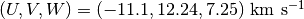

LSR¶
-
class
astropy.coordinates.LSR(*args, **kwargs)[source] [edit on github]¶ Bases:
astropy.coordinates.BaseRADecFrameA coordinate or frame in the Local Standard of Rest (LSR).
This coordinate frame is axis-aligned and co-spatial with
ICRS, but has a velocity offset relative to the solar system barycenter to remove the peculiar motion of the sun relative to the LSR. Roughly, the LSR is the mean velocity of the stars in the solar neighborhood, but the precise definition of which depends on the study. As defined in Schönrich et al. (2010): “The LSR is the rest frame at the location of the Sun of a star that would be on a circular orbit in the gravitational potential one would obtain by azimuthally averaging away non-axisymmetric features in the actual Galactic potential.” No such orbit truly exists, but it is still a commonly used velocity frame.We use default values from Schönrich et al. (2010) for the barycentric velocity relative to the LSR, which is defined in Galactic cartesian velocity components . These values are customizable via the
v_baryargument which specifies the velocity of the solar system barycenter with respect to the LSR.The frame attributes are listed under Other Parameters.
Parameters: representation :
BaseRepresentationor NoneA representation object or
Noneto have no data (or use the other keywords below).ra :
Angle, optional, must be keywordThe RA for this object (
decmust also be given andrepresentationmust be None).dec :
Angle, optional, must be keywordThe Declination for this object (
ramust also be given andrepresentationmust be None).distance :
Quantity, optional, must be keywordThe Distance for this object along the line-of-sight. (
representationmust be None).pm_ra_cosdec :
Quantity, optional, must be keywordThe proper motion in Right Ascension (including the
cos(dec)factor) for this object (pm_decmust also be given).pm_dec :
Quantity, optional, must be keyword Theproper motion in Declination for this object (
pm_ra_cosdecmust also be given).radial_velocity :
Quantity, optional, must be keywordThe radial velocity of this object.
copy : bool, optional
If
True(default), make copies of the input coordinate arrays. Can only be passed in as a keyword argument.Other Parameters: v_bary :
CartesianDifferentialThe velocity of the solar system barycenter with respect to the LSR, in Galactic cartesian velocity components.
Attributes Summary
default_differentialdefault_representationframe_attributesframe_specific_representation_infonamev_baryAttributes Documentation
-
default_differential¶
-
default_representation¶
-
frame_attributes= OrderedDict([('v_bary', <astropy.coordinates.frame_attributes.DifferentialFrameAttribute object>)])¶
-
frame_specific_representation_info¶
-
name= 'lsr'¶
-
v_bary= <CartesianDifferential (d_x, d_y, d_z) in km / s (-11.1, 12.24, 7.25)>¶
-